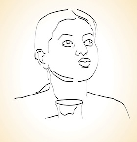

Gandhoosham |
|  |
|
Treatment involves simple gargling using warm medicinal liquid. Medicated oil, milk,
or medicinal decoction is used as the gargling agent, based on the type of disease. Herbs and spices that possess
cleansing, healing, and mucous fighting properties are used in these agents. The treatment begins with a light
oil massage on the person's face, neck, and shoulders. This is followed by mild steaming of his face and chest.
After this, the medicinal liquid is held in the person's mouth for about 4 to 5 minutes, or as long as he can
tolerate, and then thrown out. This is done at least 3 or 4 times in a day.
Pure herbal medicines like Kashayam (decoction) and Lehyam (semi-solid) are also taken along with the treatment
and should be continued for 1 or 2 weeks for good results. |